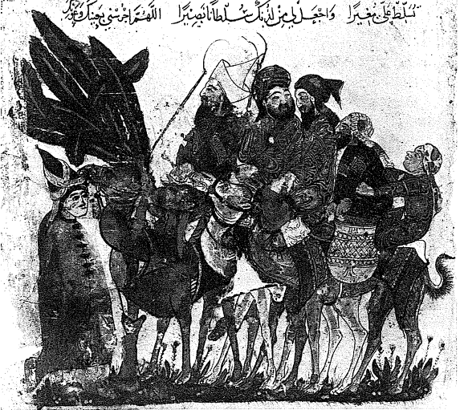
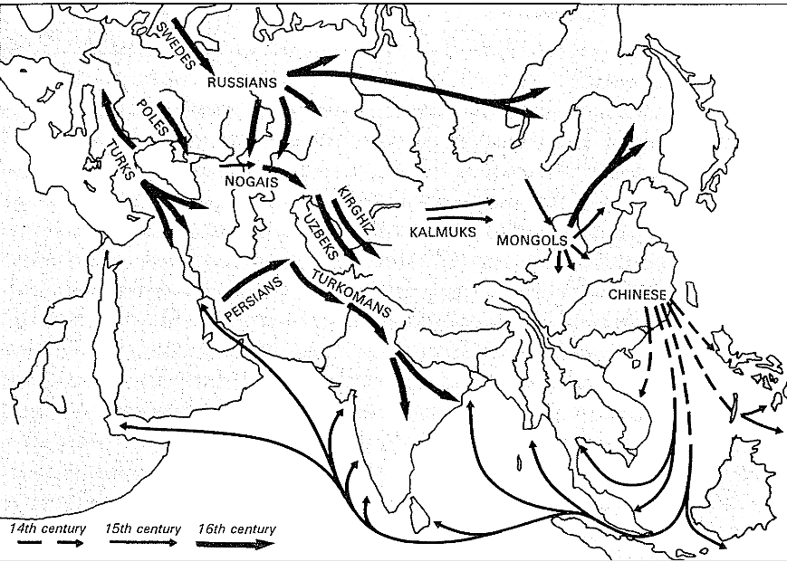
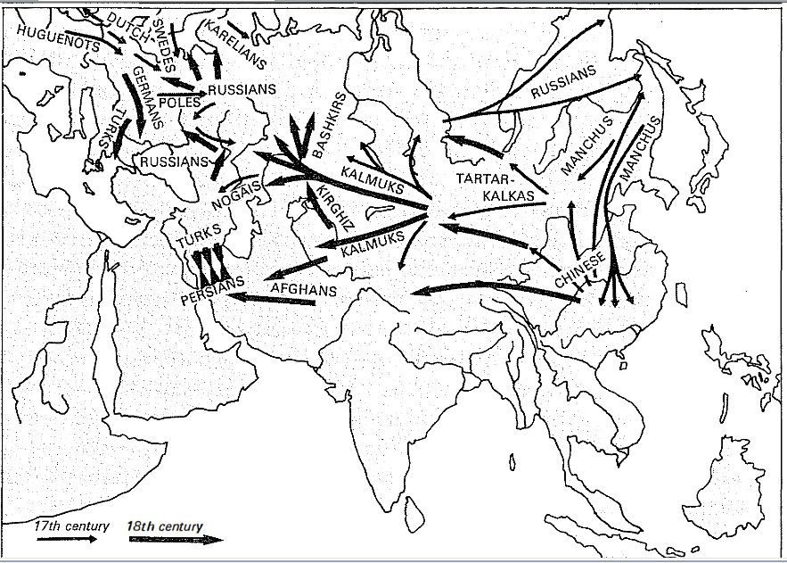

Sayı dünyayı paylaşmakta, örgütlemektedir; her canlı kitleye özel ağırlığını vermekte, bu arada onun kültür ve etkinlik düzeyini, biyolojik büyüme ritimlerini (ve hatta ekonomik olanlarını, hatta hastalık alanındaki kaderini saptamaktadır (veya hemen hemen): Çin, Hind, Avrupa'nın yoğun nüfusları uyanık veya uyuyan yayılmakta aceleci muazzam hastalık depolarıdır.
Fakat sayı aynı zamanda canlı kitlelerin aralarındaki ilişkilere de, yalnızca insanların barışçı tarihinin değil -değişimler, takaslar, ticaret-, nihayetsiz savaş tarihlerinin de resmettiği ilişkilere de ağırlığını koymaktadır. Maddi hayata tahsis edilmiş bir kitap, bu seyirlik unsurlara karşı kapalı kalabilir mi? Savaş çok biçimli, her zaman var olan, hatta tarihin sıfır düzeyinde bile var olan bir faaliyettir. Oysa sayı, onun taslağını, güç hatlarını, provalarını, aşikâr tipolojilerini önceden çizmektedir. Tıpkı gündelik hayat için mücadelede olduğu gibi, savaşta da şanslar herkes için eşit değildir. Sayı grupları, olanaklar ve anın olağan şansları karşısında efendiler ve uyruklar, proleterler ve ayrıcalıklılar olarak, hemen hemen hatasız bir şekilde sınıflandırmaktadır.
Kuşkusuz tıpkı başkalarında olduğu gibi, bu alanda da oyunu tek başına oynamakta değil midir? Teknik, barışta olduğu gibi savaşta da büyük bir ağırlığa sahiptir. Fakat teknik tüm yoğun birikmeleri eşit derecede ayrıcalıklı kılmıyorsa da, her zaman sayının çocuğudur. Bir XX. yüzyıl insanına bu önermeler apaçık şeyler olarak gözükmektedir. Onun için sayı uygarlıktır, güçtür, gelecektir. Fakat dün aynı şeyleri söyleyebilir miydi? Çelişkiyi ortaya koyan çok sayıda örnek hemen akla gelmektedir. İş ne kadar paradoksal gözükürse gözüksün -barbar istilalarının arefesinde Roma ile Germanya'nın çifte kaderini inceleyen Fustel de Coulanges'a böyle gözükmekteydi- , en kaba olanı az sayıya sahip olanı bazen kazanabilmekte veya Hans Delbüch'ün Roma fatihi barbarların bizatihi gülünç olan sayılarını hesaplarken gösterdiği üzere, kazanmışa benzeyebilmektedirler.
Uygarlıklar kaybettiklerinde veya kaybetmişe benzediklerinde, galip her zaman bir “barbardır.” Bu bir dil pelesengidir. Bir Yunanlı için, Yunanlı olmayan herkes barbardır; Çinli için de, Çinli olmayan herkes: ve dün Avrupa sömürgeciliğinin en büyük mazereti barbarlara ve ilkellere “uygarlık” götürmek olmuştur. Tabii ki barbara, lâyık olmadığı veya yarı yarıya lâyık olduğu ünü, uygarlar sağlamışlardır. Ancak kimse işleri tamamen tersine döndürerek, tarihçi Raşid Saffet Atabinen'in Atilla lehindeki savunmasına katılmamızı beklememelidir. Fakat kesinlikle gözden geçirilmesi gereken, barbar gücü efsanesidir. Barbarın zafere ulaştığı her seferinde, o yarıdan fazla uygarlaşmıştır bile. Her seferinde uzun zaman bekleme odasında durmuş ve eve girmeden önce, bir kere yerine on kere kapıyı çalmıştır. Mükemmel bir şekilde değilse bile, en azından ciddi bir şekilde, komşunun uygarlığından nasibini almıştır.
Germenlerin V. yüzyılda Roma İmparatorluğu karşısındaki klasik örneğinin kanıtladığı budur; ama Arapların, Türklerin, Moğolların, Mançuların, Tatarların tarihi de monoton tekrarlardır. Türkler ve Türkmenler İran'a ve Hazar Denizine ulaşan Orta Asya yollarının mükemmel taşıyıcıları ve kervancıları olmuşlardır. Komşu uygarlıkları ziyaret etmişler, buralarda çoğu zaman bedenleri ve mallarıyla birlikte kaybolmuşlardır. Cengiz Han'ın ve Kubilay'ın Moğolları, şamanizmlerinden çıktıkları anda (gene), tükenmiş barbarlar görüntüsü vermiyorlardı ve işte onları kısa bir süre sonra Doğu'ya doğru, Çin uygarlığı tarafından, Batı'ya doğru İslam’ın serapları tarafından cezbedilmiş ve kendi kaderlerinden kopartılmış olarak görmekteyiz. 1644'te Pekin'i, sonra Çin'in geri kalanını fethedecek olan Mançular karışık bir halktırlar. Moğol unsurlar kalabalıktır, ama Çinli köylüler çok erkenden Çin şeddinin ötesinde, Mançurya'ya doğru ilerlemişlerdir. Eğer istenirse barbar, ama önceden Çinlileşmiş bu halk, fethetmeye, muazzam Çin'in ekonomik ve toplumsal karışıklıkları tarafından itilmiş ve bu karışıklıklar tarafından uzaktan kumanda edilmiştir.
Ve özellikle de, barbar ancak kısa vadeli zafer kazanabilmektedir. Boyun eğdirdiği uygarlık tarafından çabucak emilmektedir. Germenler Roma imparatorluğunu “barbarlaştırmışlar”, sonra da şarap ülkelerinde boğulmuşlardır; Türkler XII. yüzyıldan itibaren İslam’ın bayraktarı olmuşlardır; Moğollar, sonra da Mançular Çinli kitlesi içinde kaybolmuşlardır. Fethedilen evin kapısı barbarın üzerine yeniden kapanmaktadır.

Çöle doğru yol alan kervan. El Hariri'nin El-Makâmât’ından.
Gene işaret edilmesi gereken şey, uygarlıklar için gerçekten tehlikeli olan “barbarlardın hemen her zaman tek bir insan cinsine ait olmalarıdır: Eski Dünya'nın göbeğindeki çöl göçebeleriyle, bozkır göçebeleri; ve yalnızca Eski Dünya bu olağanüstü insan grubunu tanımıştır. Atlantik'ten Pasifik kıyılarına kadar olan bu kurak ve talihsiz ülkeler zinciri, nihayetsiz bir barut fitilidir. En küçük bir kıvılcımla tutuşmakta ve tümü yanmaktadır. Başkalarına karşı olduğu kadar, kendilerine karşı da sert olan bu deve binicileri ve süvariler için, onları otlaklarından kovan bir itişmenin, bir kuraklığın, bir nüfus artışının ortaya çıkmasıyla, bunlar komşularının otlaklarını istila etmektedirler. Yıllar yıllara eklenirken, bu hareket binlerce kilometre öteye kadar yansımaktadır.
Her şeyin yavaşlık olduğu bir dönemde bunlar sürat, gafil avlama olmuşlardır. Polonya sınırında XVII. yüzyılda bile, Tatar süvarilerinin her tehdidinin düzenli bir şekilde harekete geçirdiği alarm, adeta hemen genel bir seferberliğe yol açmaktadır. Müstahkem mevkileri silahlandırmak, depoları doldurmak, eğer hâlâ zaman varsa top ikmalini sağlamak, süvariyi seferber etmek, bir kaleden diğerine mania oluşturmak. Çok kereler olduğu gibi, akın başarıya ulaşırsa -Transilvanya'nın çok sayıdaki dağı ve boşlukları boyunca olduğu gibi-, belâ Türkle bile kıyaslanamayacak bir şekilde kırların ve kentlerin üzerine çökmekteydi. Türk hiç olmazsa birliklerini kış arefesinde, Saint-Georges yortusundan sonra geri çekme âdetine sahipti. Tatarlar ise orada kalmakta, aileleriyle birlikte kışlamakta ve ülkeyi köküne kadar yemektedirler.
Ve dahası, çağın haber bültenleri olan bazı gazette'leri aracılığıyla bize dehşeti aktarılmış olan bu manzaralar, Çin ve Hind'de zafere ulaşmış olan göçebe fetihlerinin yanında hiçbir şeydirler. Avrupa, anılarında kalan olaylara rağmen (Hunlar, Avarlar, Macarlar, Moğollar) bunlardan kurtulma avantajına sahip olmuş; Doğu halklarının oluşturduğu engel tarafından korunmuştur: onların felâketi onun huzurunu sağlamıştır.
Göçebelerin gücü, aynı zamanda uygarlığın giriş kapılarını tutan insanların dikkatsizliğinden, nisbi güçsüzlüklerinden de kaynaklanmaktadır. XVIII. yüzyıldan önce seyrek nüfuslu olan şu Kuzey Çin, isteyen herkesin girdiği boşluktur, Hindistan'da Pencap çok erkenden, X. yüzyıldan itibaren Müslümanların eline geçmiştir. Ve bundan sonra da İran tarafındaki ve Hayber geçidindeki kapı bir daha kapanmayacaktır. Doğu ve Güneydoğu Avrupa'da, engellerin sağlamlığı yüzyıllara göre değişmektedir. İşte bu dikkatsizliklerin, bu zayıflıkların arasında göçebe evrenini harekete geçiren ve bazen etkili olmayan canlı dikkat dönemleri yer almaktadır: bir fizik yasası onları bazen batıya, bazen doğuya yöneltmektedir, bu yönelme onların infilâkli hayatlarının Avrupa, İslam âlemi, Hind veya Çin'de daha kolay patlamasına göre olmaktadır. Eduard Fueter'nin klasik kitabı 1494'te bir fırtına alanını, prenslerin ve kentsel cumhuriyetlerin parçalanmış İtalya'sına doğru muazzam bir çağrı alanını işaret etmektedir: tüm Avrupa bu fırtına yaratan alçak basınç tarafından çağrılmaktadır. Bozkır halkları da aynı şekilde, onları daha düşük direnç hatlarına veya batıya inatla taşıyan fırtınalar tarafından yöneltilmektedirler.
Minglerin Çin'i 1368'de böylece Moğolları avlamış ve onların Gobi çölündeki büyük merkezleri Karakurum'u yakmıştır. Fakat bu zaferin arkasından, göçebelerin güçlü bir şekilde doğuya dönmelerini belirleyen uzun bir atalet gelmiş, göçebelerin bir, iki, on, yirmi yıllık aralıklarla, batıda daha uzaklara yansıyan hareketleri içinde yer alma eğilimindeki soydaşlarını buraya çekmek üzere yaratılmış olan ilk dalgaların ilerlemesiyle, önceden bir boşluk yaratılmıştır. Nogaylar 1400'e doğru Volga'yı batıdan doğuya doğru geçmişler ve Avrupa'da kum saatinin tersine dönüşünün yavaş hareketi bakmıştır: iki yüz yıldan fazla bir suredir batıya ve nârin Avrupa’ya akmakta olan Halklar, artık iki veya üç yüzyıl boyunca, uzak Çin'in zayıflığı tarafından cezbedilmiş olarak, doğuya akacaklardır. Haritamız, belirleyici olayların, Kuzey Hindistan'ın Babür tarafından alışılmadık bir durum olarak fethi (1528) ve Pekin'in 1644'te Mançular tarafından zaptedilmesi olduğu, bu tersine dönüşü özetlemektedir. Bir kere daha fırtına Hind ve Çin'i vurmaktadır.
Bunun sonucu olarak, batı yönünde Avrupa daha iyi soluk almaktadır. Eğer Ruslar 1551 ve 1556'da Kazan ve Astrakan'ı ele geçirebildilerse, bu yalnızca barut ve çakmaklı tüfek sayesinde olmamıştır; Güney Rusya'daki göçebe baskısında hafifleme olmuş, bu da Rusların Volga, Don ve Dnyester nehirlerinin çevresindeki kara topraklara ilerlemelerini kolaylaştırmıştır. Bu oyunda, eski Moskof devleti senyörlerinin katı otoritelerinden kaçan köylülerinden bir kısmını kaybetmiş ve bu terk edilmiş topraklara Baltık ülkeleriyle, Polonya'dan köylüler gelmiştir; bu sonuncuların açtıkları boşluklar da, tam zamanında Brandenburg ve Iskoçya'dan gelen köylüler tarafından doldurulmuştur. Sonuç olarak bir bayrak yarışı: iki harika tarihçi, Alexandre ve Eugene Kulischer bu sessiz tarihi^ Almanya'nın Çin'e doğru, tıpkı tarihin derisi altına gizlenmiş gibi olan şu yeraltı akıntılarıyla birlikte kaymasını böyle görmektedirler.
Sonra Çin'in Mançular tarafından fethi 1680'lerde yeni bir düzenle sonuçlanmıştır. Tutulan, korunan Kuzey Çin koruyucu ilerlemelerin çatısı altında yeniden iskân edilecektir: galiplerin geldikleri Mançurya, sonra Moğolistan, Türkistan, Tibet. Sibirya'yı itirazsız sahiplenen Ruslar, Amur vadisi boyunca Çin direnmesiyle karşılaşacaklar ve Nerçinsk antlaşmasını (7 Eylül 1689) imzalamak zorunda kalacaklardır. Çinliler artık Çin şeddinden Hazar denizi yakınlarına kadar gitmektedirler. Bu başarılardan önce, çobanların çoklu dünyası, tersine dönerek, yolunu batıya doğru çevirmiştir ve Moğolistan ile Türkistan arasındaki göçlerin klasik darboğazı olan Cungarya kapısından geçmiştir. Ancak bu kez, büyük kaçışları için açık kapı bulamayacaklardır. Bu kaçış batıya doğru yeni bir Rusya'ya toslamıştır, Büyük Petro'nun Sibirya ve Yukarı Volga'da kale, palanka ve kentlerle donattığı Rusya'sı. İzleyen yüzyılın tüm Rus edebiyatı, bu tekrarlanan çarpışmaların anlatılarıyla doludur.
Fiili durumda, artık göçebelerin büyük kaderi sona ermektedir. Top barutu onların süratinin hakkından gelmiştir, XVIII. yüzyılın bitmesinden önce, Pekin'de olduğu gibi Moskova'da da, Tahran'da olduğu gibi (Afganlar geliyor diye çıkan canlı alarmdan sonra) Delhi'de de uygarlıklar kazanmıştır. Evlerinde kalmaya mahkûm olan göçebeler, aslında oldukları gibi, yerlerine yerleştirilmiş ve mecbur olduklarından ötürü buraları tutan fakir insan grupları olarak gözükeceklerdir. Sonuç olarak, istisnai bir durum söz konusudur, yani uzun bir asalaklığın istisnası, ama artık geri gelmez bir şekilde tedavi edilmiştir. Muazzam yansımasına rağmen, adeta kuraldan sapan bir durum.
Zaten olağan kural, uygarlıkların oynamaları ve kazanmalarıdır. Uygarlıklar “kültürler”e karşı kazanmakta, ilkel toplumlara karşı kazanmaktadırlar; uygarlıklar aynı zamanda boş mekâna karşı da kazanmaktadırlar. Bu sonuncu şıkta onlar için en iyisi, her şeyi inşa etmektir, ama Avrupalıların Amerika mekânının dörtte üçünde, Rusların Sibirya'da, İngilizlerin Avustralya ve Yeni Zelanda'da büyük şansları vardır. Güney Afrika'da Boerlerin ve İngilizlerin karşısına siyahların ilerlemesinin çıkmaması beyazlar için ne büyük şanstır.
Brezilya’da Portekizli belirir belirmez, ilkel yerli gizlenmektedir: yerini vermektedir. Sao Paolo'da bandeiras hemen hemen boşlukta, birbirlerinin üzerine yığılmaktadırlar. Köle, değerli taş ve altın peşindeki Sao Paololu maceracılar, bir yüzyıldan daha kısa bir sürede, Rio de la Plata'dan Amazon'a ve Andlara kadar, Güney Amerika kıtasının yarısını, onu ele geçirmeden katetmişlerdir. Cizvitlerin kızılderili koruma sahalarına -ki paulistas buraları hiçbir kaygı ve utanma duymadan yağmalayacaklardır- kurmalarından önce, çok ufak bir direnişle karşılaşmışlardır.
Kuzey Amerika'da Fransız veya İngilizlerin, Kuzey Meksika'nın çöl bölgelerinde az sayıda ve sert Çiçimek Kızılderililerinin karşısında İspanyolların önüne aynı yöntem çıkmaktadır. Bu Kızılderililere karşı sistematik bir insan avı XVII. yüzyılda bile sürdürülmekteydi; her yılın Kasım ayından itibaren onların peşine, tıpkı “vahşi hayvanlarmış” gibi düşülmekteydi. Arjantin'de ve özellikle Şili’de işler daha. zor olacaktır, çünkü Kızılderili galipten en azından atı öğrenmiştir ve Arokanlar XX. yüzyılın başına kadar inatçı hasımlar olacaklardır. Aslında söz konusu olan insanların değil de (onlar yok edileceklerdir), mekânın fethidir. XVI. yüzyılla birlikte Arjantin Pampa'sının ağır arabaları ve onları çeken çift öküzler, İberyalıların elindeki Amerika'nın katır kervanları veya ABD'de western filmlerinin ünlü kılacağı, XIX. yüzyıldaki batıya doğru ilerlemenin arabaları; işte düzenli olarak bir iskân cephesine, her şeyin ayağa fırladığı bir öncü alanına ulaşılan bu sessiz fethin araçları bunlar olmuştur. Göçmen çiftçilerin bu uzak ve kıyı alanlarındaki hayatı sıfırdan başlamaktadır; inşan sayısı, toplumsal hayatın kendini onlara dayatmasına yetmeyecek kadar azdır; burada herkes kendi kendinin efendisidir. Bu cazip anarşi bir süre devam etmiş, sonra düzen kurulmuştur. Ancak, sınır içe doğru biraz daha uzağa kayarken, oraya aynı anarşik ve geçici hareketleri de taşımıştır. Bu moving frontier’dir; F.J. Turner'ın romantizmi burada dün (1921), bizatihi Amerika'nın ve onun en güçlü özgünlüklerinin doğumunu görmekteydi.


AVRASYA GÜÇLERİ (XIV. - XVIII. YÜZYILLAR)
İki harita arasındaki çelişki aşikârdır: birincisinde göçler, karayolundan batıdan doğuya, İkincisinde doğudan batıya yapılmaktadır. Birinci haritada, XV. yy'ın başında çok büyük olan Çin deniz yayılmasını ve karayolundan Hind ve Çin yönlerine doğru hareketlerin çakışmasını kaydedin, ikinci haritada, XVII. yy'da Mançular tarafından düzenin sağlanması (Pekin'in alınması 1644) Çinlilerin kıtada geniş ölçüde yayılmalarına ve Rusların durdurulmasına yol açıyor. Göçebeler batıya ve Avrupa Rusya'sına atılmışlardır (A. ve E. Kulischer'e göre).
Çıplak veya hemen hemen çıplak mekânın fethi; bu kolaylıklar aynı zamanda, tuz tüccarları, kürk avcıları dörtnala gidişiyle Sibirya'yı ele geçirmeyi başaran Kazakların XVI. yüzyılıyla birlikte ortaya çıkan büyük Rus yayılmasının da kolaylıklarıdır. Çok canlı direnmeler çıkmıştır, ama bir darbede kırılmaktadırlar. Kentler yerden bitmekte kaleler karayolu istasyonları, köprüler, arabalar, atlar ve kızaklar için menziller ortaya çıkmıştır."(1587'de Tobolsk, 1648'de Okotsk, 1652'de Baykal gölü yakınlarındaki Irkutsk). İsviçre kökenli olan bir Rus askeri hekimi için, Sibirya 1776'da hâlâ menzillerden, at üstündeki tüketici günlerden -ki günün sonunda kaleye, kente veya gerekli barınağa ulaşmak zorunludur-, ibarettir; kışın varış noktasını ıskalayan kızaklı tüccar, adamları, hayvanları ve mallarıyla beraber, ebediyete kadar karın altına gömülme tehlikesiyle karşı karşıyaydı. Bir yol ve kent sistemi, yavaş yavaş hale yola sokulmuştur. Amur havzasına 1643'te ulaşılmış, muazzam Kamçatka yarımadası 1696'da tanınmıştır, izleyen yüzyılda Rus kâfişler Alaska'ya varmışlar, göçmenler buraya 1779'da yerleşmişlerdir. Burada söz konusu olanlar hızlı, ama narin el koymalardır, fakat bunlar aynı zamanda hayranlık vericidirler. Keşif gezileri için Okotsk'a yerleşen Behring, 1726'da kentin kalesinde ancak birkaç Rus aile bulmuştur. John Bell 1719'da Sibirya'da ana bir yol üzerinde yolculuk yapmaktadır ve “altı gün boyunca ne ev ne de insan görmüş”tür.
İlerleme artık boşlukta olmaktan çıkınca, her şey karmaşıklaşmaktadır ve şarkı bile artık aynı değildir. Doğu ülkelerindeki “Alman kolonizasyonu” Ostsiedlung ile Amerikan sınır harekâtı arasındaki ünlü kıyaslamacıların inatlarına rağmen, hiçbir karıştırma mümkün değildir. XII. yüzyıldan XIII. yüzyıla, hatta XIV. yüzyılda, Almanya göçmenleri (geniş anlamda, çünkü bunların çoğu Lorraine ile Alçak Ülkeler'den gelmişlerdir), siyasal ve toplumsal rızalar ve bazen de şiddet sayesinde Elbe'nin doğusuna yerleşmişlerdir. Yeni gelenler köylerini, ormandan kazanılan geniş boş arazilerin ortasına kurmuşlar, evlerini yolların uzantısı boyunca sıralamışlar, muhtemelen demir uçlu ağır pullukları bölgeye getirmişler, kentler kurmuşlar ve böylece ya karasal Magdeburg'unki veya denizsel Lübeck'inki olmak üzere, Alman hukukunu Slav kentlerine dayatmışlardır. Burada muazzam bir hareket söz konusudur. Fakat bu iskân faaliyeti zaten orada olan, az veya çok sıkı bir ağ geliştirmiş, yeni gelenlere direnebilecek, gerektiğinde onların üzerine kapanabilecek olan bir Slav halkın içinde yapılmaktadır. Bu biçim kazanmakta gecikmiş ve doğuya doğru ilerlemesini Slav: halkların yerleşmesinden ve bunların toprağa bağlanıp, dün ileri sürdüğünden daha sağlam bir şekilde kentlerinin üzerine yaslanır hale gelmelerinden sonra ancak başlatabilmiş olan Almanya’nın kötü talihidir.
Rusların hemen kemen Eoş olan Sibirya yönündeki değil de, gene bu aynı XVI. yüzyılda güney nehirlerine doğru olan yayılması konusunda da aynı şey tekrarlanacaktır. Volga, Don, Dniester gibi güney nehirleri yönündeki bu yayılma, aynı zamanda istediği gibi davranan bir köylü iskânıyla da damgalanmıştır. Volga ile Karadeniz arasındaki bozkır sık bir iskâna uğramamıştır, ama burası, Nogaylar ve Kırım Tatarları gibi göçebe halkların yolu olmaktadır. Çekinilmesi gereken süvariler olan bu göçebeler, İslamiyetin ve geniş Türk imparatorluğunun öncüleridir; Osmanlı da onları gerektiğinde desteklemekte, onları ileri sürmektedir, hatta onlara Kazan ve Astrakan hanlıklarını savunanlarda olmayan ateşli silahları vererek, Onları Ruslardan kurtarmıştır. Demek ki bu hasımlar küçümsemeye gelmez. Tatarlar yaptıkları akınlarda Transilvanya, Macaristan, Polonya ve Moskof devleti yakınlarına kadar gelmekte, buraları gaddarca çiğnemektedirler. 1572'deki akınlarından birinde Moskova ellerine geçmiştir. Slav esirler (Rus ve Polonyalı) İstanbul esir pazarında sonu gelmez bir şekilde satılacaklardır. 1696'da Büyük Petro'nun Karadeniz'e “bir pencere” açma girişiminde başarısızlığa uğradığı da bilinmektedir, bu başarısızlık ancak yüz yıl sonra II. Ekaterina tarafından telâfi edilebilecektir. Ancak bu olay nedeniyle Tatarlar devre dışı bırakılmış olmayacaklardır; II. Dünya Savaşına kadar yerlerinde kalacaklardır.
Öte yandan, Rus köylülerin buradaki iskânı, eğer müstahkem mevkiler ile askeri “uçlar” olmasaydı ve Kazaklar gibi kanundışılar onlara yardım etmeselerdi, düşünülemez bir şey olarak kalırdı. Süvari olan Kazaklar aşırı bir hareketlilik içinde olan bir hasma karşı cevap verebilirlerdi; aynı zamanda kayıkçı olarak nehirleri aşağı ve yukarı yönlerde kat etmekte, kayıklarını bir kanaldan öbürüne taşımaktaydılar: işte 1690'a doğru 800 kişi olarak Tanais'ten gelip, “Kalmuk Tatarları”nın peşine takılmak için kayıklarını Volga'ya indirmişlerdir; bunlar denizcilik de yapmakta, yelkenle aşırı dolu kayıkları XVI. yüzyılın sonundan itibaren Karadeniz'de korsanlığa çıkmaktadır. Demek ki modern Rusya, bu cephede boş bir alan üzerinde inşa edilmemiştir. XIX. yüzyılda, gene bir kere daha İslamiyet’e karşı ilerlediği Kafkaslar veya Türkistan’da da ne çaba sarfederek ne de beklemediği durumlara düşerek ilerleyebilecektir.
Başka örnekler de açıklamamızı destekleyebilir; Kara Afrika'nın XIX. yüzyılda Avrupalı güçler tarafından gecikmiş ve geçici iskânına veya Meksika ve Peru'nun İspanyollar tarafından fethine dair olsalar bile, bu narin uygarlıklar doğrusunu söylemek gerekirse bu kültürler, yalnızca birkaç kişinin önünde çökmüşlerdir. Fakat bugün bu ülkeler tekrar Kızılderili veya Afrikalı hale gelmektedirler.
Bir kültür, henüz olgunluğa, ne optimum noktasına ermiş ne de gelişmesini garantiye almış bir uygarlıktır. Beklerken -ve bu bekleme sürebilir- komşu uygarlıklar onu birçok biçimde sürdürmektedirler ve bu haklı değilse bile doğaldır. Okuyucu bu konuda, bizim için XVI. yüzyıldan itibaren bildik hale gelen, Gine körfezi kıyılarındaki bu ticareti aklına getirsin. Bu, tarihte örneklerinin bol olduğu şu ekonomik sömürünün tipik örneklerinden biridir. Mozambik yerlileri olan Kafrlar, Hind Okyanusu kıyılarında eğer “maymunlar konuşmuyorlarsa, bunun nedeninin onları çalıştıracaklarından korkmaları” olduğunu savunmaktadırlar? Fakat bizzat kendilerine gelince onlar konuşmak, pamuk dokumaları satın almak, altın tozu satmak hatasına düşmektedirler. Güçlülerin oyunu her zaman aynı, her zaman çok basittir. Fenikeliler veya Eski Yunanlılar ticaret merkezlerinde veya kolonilerinde; Arap tüccarlar XI. yüzyıldan itibaren Zanzibar kıyılarında; Venedikliler ve Cenevizliler XIII. yüzyılda Kefe veya Tana'da veya Çinliler onlar için altın tozu, baharat, karabiber, köle, değerli tahta ve kırlangıç yuvası alanı olan Filipinler ve Endonezya'da daha XIII. yüzyıldan önce daha farklı bir şekilde davranmıyorlardı. Bu kitabın kronolojik aralığı içinde, bir Çinli taşıyıcılar, çerçiler ve perakendeciler bulutu bu “sömürge” pazarlarını sömürmektedir ve ben bu sömürünün geniş ve kolay olduğu ölçüde, Çin'in zekâsına ve buluşlarına (örneğin kâğıt para) rağmen, çok az icatçı, kapitalist düzlemde çok az modern kaldığını savunacağım. Çok kolay bir fırsat yakalamıştır.
Pazardan sömürgeye geçmek için bir adım yetmektedir: sömürülenin kurnazlık yapması, itiraz etmesi yeterlidir, fetih gecikmeyecektir. Fakat kültürlerin, yarı-uygarlıkların (bu Kırım Tatarlarına bile uygun düşecek kelimedir) ihmal edilemeyecek hasımlar olduklarının sağlaması yapılmıştır. Uzaklaştırıldıklarında, yeniden belirmekte, hayatta kalmakta inat etmektedirler. Gelecek onlar için ebediyen kaybedilmiş olamaz.
Uygarlıklar birbirlerine çarptıklarında, dramlar meydana gelmektedir ve bugünün dünyası bundan henüz kurtulabilmiş değildir. Bir uygarlık bir diğerine üstün gelebilir: bu, İngilizlerin Plassey savaşındaki (1757) zaferlerinden sonra Hindistan’ın trajedisidir, bu zafer İngiltere ve dünya için yeni bir dönemin başlangıcı olmuştur. Bunun nedeni, bugünkü Kalküta yakınlarındaki Plassey veya daha doğrusu Plassey'deki savaşın olağanüstü bir zaferle sonuçlanması değildir. Palavra atmaksızın, Dupleix veya Bussy'nin de en azından aynı başarıyı gösterdiklerini söyleyelim. Fakat Plassey savaşının muazzam sonuçları olmuştur ve büyük olaylar bu özelliklerinden tanınmaktadırlar: bir devamları vardır. Aynı şekilde, saçma Afyon Savaşı (1841-1842) bir yüzyılın başlangıcını damgalayacaktır: sömürge olmadan sömürgeleştirilen" ve sonra sömürge olaan Çin için “eşitsizlik” yüzyılınım İslam alemine gelince, Türkiye (bugün de öyle) istisna tutulacak olursa, XIX. yüzyılda bütünü itibariyle boğulmuştur. Fakat Çin, Hind, İslam âlemi (çeşitli parçaları itibariyle) 1945'ten sonraki zincirleme tasfiyelerle, bağımsızlıklarını yeniden kazanmışlardır.
İşte- bugünkü insanların gözünde, geriye yönelik olarak, süreleri ne olursa olsun, çalkantılı elde etmeler, geçici anlar olma görüntüsünü veren bir durum olmaktadır. Bu ele geçirmeler yavaş veya hızlı bir şekilde yerleşmektedirler. Ve sonra bir gün, tıpkı tiyatro dekorları gibi yıkılmaktadırlar.
Aynı yükseklikte basitleştirilmiş bu kaderin tümü, yalnızca sayının, basit güç oyunlarının, voltaj farklarının veya ham yer çekimlerinin etkisi altında değildir. Fakat sayının da yüzyılar boyunca söyleyecek sözü olmuştur. Bunu unutmayalım. Maddi hayat burada sürekli açıklamalarından birini, daha da kesin olarak, zorlayıcılarından birini ve sabitlerinden birini bulmaktadır. Eğer savaşın rolü unutulacak olursa, koskoca bir toplumsal, siyasal, kültürel (dinsel) manzara hemen silinmektedir. Ve bizzat mübadeleler de anlamlarını kaybetmektedirler, çünkü çoğu zaman eşitsiz mübadeleler söz konusudur. Avrupa, köleleri ve bağımlı ekonomileri olmaksızın anlaşılamaz olur. Veya Çin, eğer kendi evinde onu inkâr eden yabani kültürler ve uzakta boyunduruk altına alınan, onun yörüngesinde hareket eden ülkeler olmaksızın anlaşılamaz.
Sonuç olarak, dünyanın XV. ile XVIII. yüzyıllar arasındaki farklılaşmış kaderi hakkında bir ilk görüntü verebilmek için, sayıdan yararlandığımızı söyleyelim. İnsanlar bu dönemde, gündelik hayatlarının karşısında, aynı derecede eşitsiz bir donanıma sahip olan büyük kitleler halinde bölünmüşlerdir ve bu gruplar arasında eşitsizlik belli bir toplumu oluşturan farklı gruplar arasındaki eşitsizlikle aynı boyuttadır. Böylece ilerideki sahifelerde karşılaşacağımız kolektif kişiler, dünya ölçeğinde sunulmuş olmaktadırlar. Aslında bu kişiler ekonomik hayatın en üst noktalarına ve bugünkü dünyanın dramatik gerçeğinin bizi alışık hale getirdiği bir sınıflandırmaya göre, yeryüzünün gelişmiş bölgeler ve gecikmiş bölgeler olarak, kuşkusuz daha şiddetli bir şekilde bölen kapitalizme tahsis edilmiş olan ikinci ciltte daha iyi görüleceklerdir.